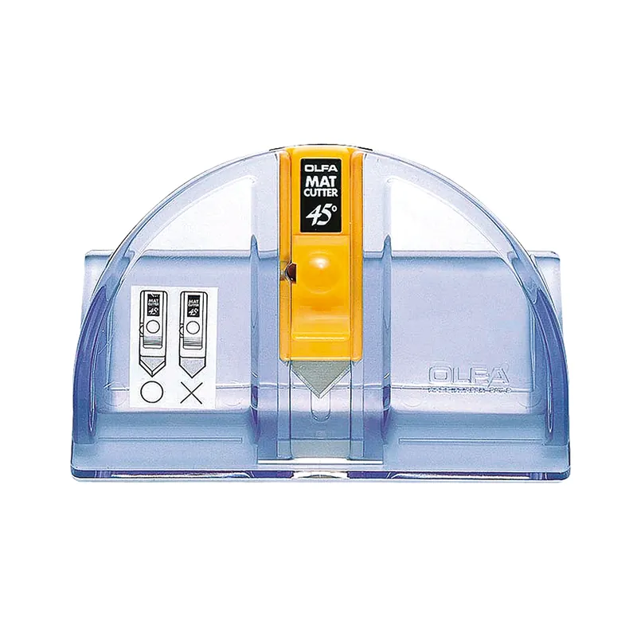

Manualidades y precisión Código MC-452B
Cuchillo Ángulo de 45°
Cuchillo ángulo de 45° con repuestos incluidos, ideal para cortes biselados y trabajos de precisión.
CódigoMC-452B
LíneaManualidades y precisión
Edad recomendada18 años o más
¿Lo necesitas para tu equipo?
Los precios se informan por cotización. Indícanos la cantidad y el rubro.
Descripción
- Diseñado para cortes en 45°, ideal para trabajos de precisión.
- Incluye 2 repuestos, asegurando una mayor vida útil.
- Perfecto para cortes biselados, logrando acabados profesionales.
- Apto para diestros y zurdos, facilitando su uso.
- Perfecto para manualidades, permitiendo cortes limpios y exactos.